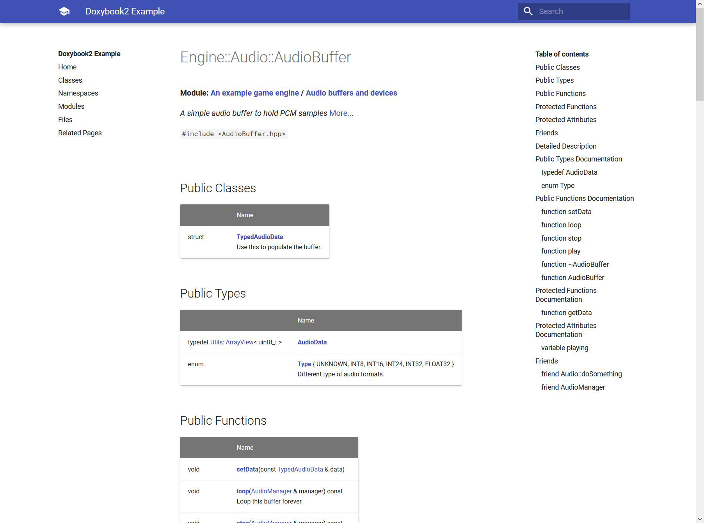

Quickstart
Integration üíª
Get the binary packages from the release section.
Put the binary file (doxybook or doxybook.exe) somewhere in your system and add it to the
OS PATH environment variable.
Hint
If you need a more recent version of doxybook, you can download the binary packages from the
CI artifacts or build the library from the source files.
We do not provide binary packages for all platforms. In that case, you can build the package from source. Any dependencies unavailable will be downloaded during configuration. You can also use a CMake package manager toolchain, such as vcpkg, to download these dependencies.
Build:
cmake -S . -B build -D CMAKE_BUILD_TYPE=Release -D CMAKE_CXX_FLAGS="/O2"
cmake --build build --config Release
Install:
cmake --install build
Create packages:
cpack build
Packaging Debug and Release
Use these instructions to setup CPack to bundle multiple build directories and construct a package that contains multiple configurations of the same project.
Build:
cmake -S . -B build -D CMAKE_BUILD_TYPE=Release -D CMAKE_CXX_FLAGS="-O2"
sudo cmake --build build --config Release
Install:
sudo cmake --install build
Create packages:
sudo cpack build
Build:
cmake -S . -B build -D CMAKE_BUILD_TYPE=Release -D CMAKE_CXX_FLAGS="-O2"
cmake --build build --config Release
Install:
cmake --install build
Create packages:
cpack build
Extra CMake Options
These are the options available when building the project with CMake:
| Option | Description | Default |
|---|---|---|
DOXYBOOK_BUILD_INSTALLER |
Build installer target | ON if running CMake from the root directory |
DOXYBOOK_BUILD_PACKAGE |
Build package | ON if running CMake from the root directory |
DOXYBOOK_USE_FIND_PACKAGE |
Do not use find_package to find dependencies | ON if not crosscompiling |
DOXYBOOK_USE_FETCH_CONTENT |
Do not use FetchContent to fetch dependencies | ON if not crosscompiling |
Hello World üëã
You only need Doxygen, doxybook from this repository, and some markdown static site generator.
- Document your code so that Doxygen can pick it up.
- Make sure your
DoxyfilecontainsGENERATE_XML = YESandXML_OUTPUT = xml. A sampleDoxyfileis provided in theexample/Doxyfilefolder in this repository. - Run doxygen simply by calling
doxygenin terminal in the same directory as yourDoxyfile. - Run doxybook as the following:
doxybook --input path/to/doxygen/xml --output path/to/destination
Examples üñº
Config:
{
"baseUrl": "/doxybook/hugo-book/",
"indexInFolders": true,
"linkSuffix": "/",
"linkLowercase": true,
"indexClassesName": "_index",
"indexFilesName": "_index",
"indexGroupsName": "_index",
"indexNamespacesName": "_index",
"indexRelatedPagesName": "_index",
"indexExamplesName": "_index",
"mainPageInRoot": true,
"mainPageName": "_index"
}

Config:
{
"baseUrl": "/doxybook/mkdocs-readthedocs/",
"indexInFolders": false,
"linkSuffix": "/",
"mainPageInRoot": true,
"mainPageName": "index"
}

Config:
{
"baseUrl": "/doxybook/mkdocs-material/",
"indexInFolders": true,
"linkSuffix": "/",
"indexClassesName": "index",
"indexFilesName": "index",
"indexGroupsName": "index",
"indexNamespacesName": "index",
"indexRelatedPagesName": "index",
"indexExamplesName": "index",
"mainPageInRoot": true,
"mainPageName": "index"
}
Config:
{
"baseUrl": "/doxybook/mkdocs-bootswatch/",
"indexInFolders": true,
"linkSuffix": "/",
"indexClassesName": "index",
"indexFilesName": "index",
"indexGroupsName": "index",
"indexNamespacesName": "index",
"indexRelatedPagesName": "index",
"indexExamplesName": "index",
"mainPageInRoot": true,
"mainPageName": "index"
}
Config:
{
"baseUrl": "/",
"indexInFolders": true,
"linkSuffix": ".md",
"linkLowercase": false,
"indexClassesName": "README",
"indexFilesName": "README",
"indexGroupsName": "README",
"indexNamespacesName": "README",
"indexRelatedPagesName": "README",
"indexExamplesName": "README",
"mainPageInRoot": true,
"mainPageName": "README"
}

Config:
{
"baseUrl": "/doxybook/hugo-learn/",
"indexInFolders": true,
"linkSuffix": "/",
"linkLowercase": true,
"indexClassesName": "_index",
"indexFilesName": "_index",
"indexGroupsName": "_index",
"indexNamespacesName": "_index",
"indexRelatedPagesName": "_index",
"indexExamplesName": "_index",
"mainPageInRoot": true,
"mainPageName": "_index"
}
Requirements ⚙
- Requirements: C++17
- Tested compilers: MSVC 14.2, 14.3; GCC 9, 10, 11, 12; Clang 12, 13, 14; AppleClang: 13
- Tested standards: C++20; C++17
Acknowledgments
This project is a fork of https://github.com/matusnovak/doxybook2-bsl-license.
We deeply appreciate all the contributions of Matus Novak.